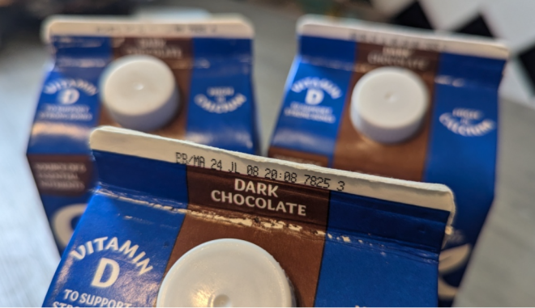

不久前，加拿大卫生部发布的一则召回通知引发关注。在超市内热销的包含多种口味的植物奶因受李斯特菌污染而被召回。而且感染病例已经出现在加拿大4个省份，导致十几人住院和两个死亡病例。近日食品检验局表示，确认这些被召回的植物奶是在安省Pickering一家工厂内生产。

据CityNews报道，污染发生在这家工厂Joriki的一条“专用生产线”上，Joriki是植物奶制造商加拿大达能公司（Danone Canada）所使用的第三方饮料包装设施。
该机构表示，现在该生产线已“完全拆除，工厂检查仍在进行中”。
加拿大公共卫生部此前证实，有18例李斯特菌病病例与Silk牌杏仁奶、椰奶、杏仁椰奶和燕麦奶以及Great Value牌杏仁奶有关。
确诊病例来自安省、魁省、阿省和诺省，其中12人来自安省，4人在魁省，诺省和阿省分别有1人感染。其中，13名患者需要住院治疗，两人因使用了受污染产品身亡，据安省卫生厅证实，这两个死亡病例发生在安省。
加拿大食品检验局的数据显示，至少有15例感染发现于今年6 月和7月。
植物奶的召回通知于7月8日首次发布。卫生专家表示，李斯特菌会在人们食用或饮用受污染产品后的长达两个月内，使人患病。
根据召回通知，受影响产品的最佳保质期截至10月4日，产品代码为7825。
官员表示，未来可能会继续报告更多与疫情相关的疾病，因为疾病报告期为9至29 天。
李斯特菌病的症状可能在食用受污染食物三天后开始出现，但可能需要在长达70天的时间内才会显现出来。
其症状包括发烧、恶心、痉挛、腹泻、呕吐、头痛、便秘和肌肉疼痛。在严重的情况下，细菌会扩散到神经系统，引起颈部僵硬、精神错乱、头痛和失去平衡等症状。
免疫系统较弱的人和60岁以上的成年人在接触后特别容易出现严重的李斯特菌病症状。孕妇及其未出生或新生婴儿的风险也较高。
如果您认为自己拥有任何召回的产品，可以登录网站recalls-rappels.canada.ca食品检验局建议将其扔掉或退回零售商。
如果您认为自己正在经历李斯特菌感染的症状，请联系您的医生。
食品检验局周三在一份声明中表示，“在确认实施了必要的纠正措施，且在食品检验局确信已发现并消除任何污染之前，这条专用生产线将不会恢复生产。”
声明还指出，“达能加拿大和Joriki Inc.公司的Pickering分厂已全面参与正在进行的食品安全调查，以确定污染源，并正在实施纠正措施，包括加强安全和生产规程。”